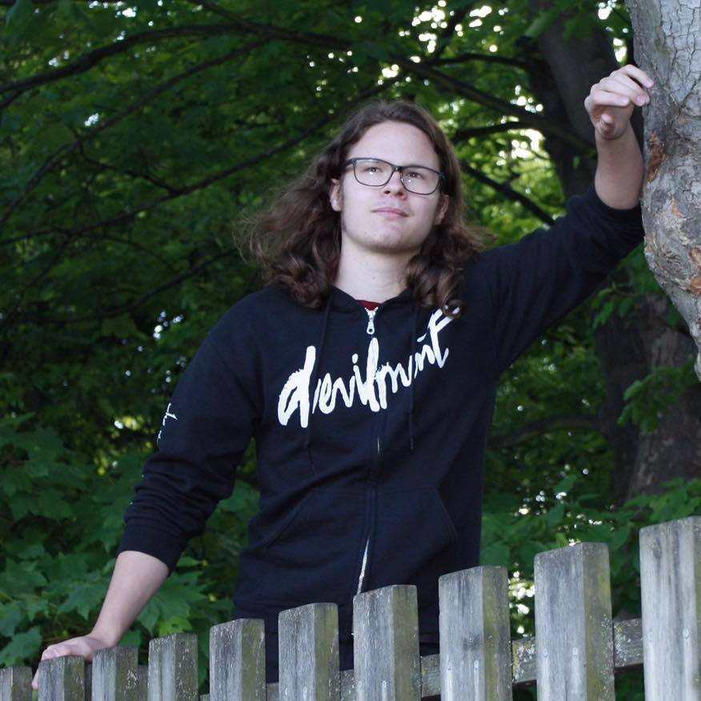
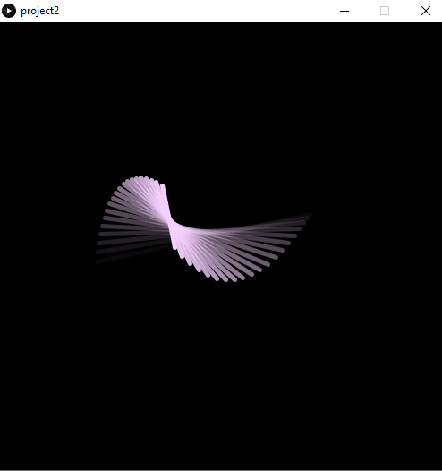
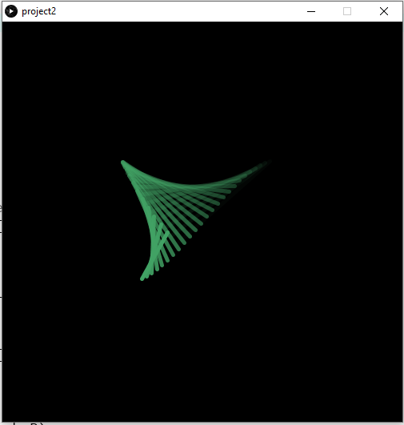
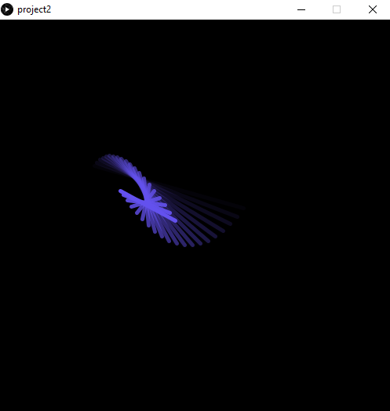

Akos SzenteThis bootcamp is my first expreience with coding. I did not have prior knowledge about programming. After 2 weeks, I am able to understand certain parts of the code and I have learned many concepts that were new to me. Furthermore, I have faced many problems and challenges throughout the bootcamp, but I believe that the confusing parts will become clear once I get more practice. Hobbies: In my free time I enjoy listening to music, playing games reading and playing the guitar. |
 |
|
|
|
Bootcamp 2020: Geometrical animationMy first programming project, concluding the 2 week Programming Bootcamp at City (2020). This Processing project demonstrates a comprehensive understanding of the use of if statements, loops, and randomness. I have created this geometrical animation that has a calming affect. it used a bit of user interaction in the form of responding to certain key presses and mouse movements. The keys of r g b are used to represent the RGB pallete. Whichever key is pressed, the animation will display a shade of the given colour. For example, if r is pressed the animation would be a shade of red. If the spacebar is pressed, a random colour would be displayed. Furthermore, if the mouse is moved from left to right, the speed increases. if it is moved from bottom to the top, the number of lines that are displayed increases. The backbone of the project are the mathematical functtions that allow the formation of the curved paths that the lines follow. The moving lines also have opacity added. From the range of 1 to 40, the lines that are closer to 1 are the most transparent, while the lines that are closer to 40 are solid or barely transparent. Check out the code on Github: https://github.com/AkosSzente-City/AkosSzente-City.github.io/ |
|
|    | |
This is the java project that I have been working on this semester. While making the game, I learned many things.
I learned how a bigger scale project is organised. I organised the different classes into various packages for clarity.
Moreover, I also did quite a lot of commenting to make the functionality of methods and variables cleared.
I also included JavaDoc for better documentation.
During the project, I learned about subclasses, sound,
GUIs and many more aspects of java programming. The game that was made for the project is a platformer game,
where the player needs to collect coins to get to the next level and avoid the obstacles. The game has functionality such as,
sound, collisions, menus, saving/loading and highscore.
When all 5 levels are completed, the player can put his/her name
into the game and save the score of all levels. Moreover, the game has 3 different save files that can be loaded and changed with the use of the buttons.
Some of the bigger challenges were the highscore system, with including scores from all the levels, but after figuring it out,
it got easy. Furthermore, I struggled guite a bit with muting all the background sounds. The problem came from being unfamiliar with the methods